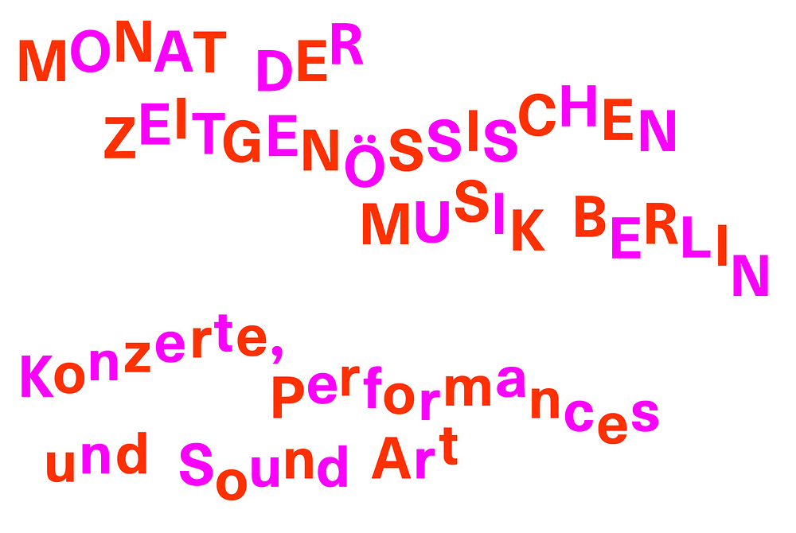

Hello Y-E-S Fest 22!
On the 10th and 11th of September the Y-E-S collective invites to the second edition of the Y-E-S Fest, taking place in and around the Heizhaus of the Uferstudios in Berlin. The program includes interdisciplinary performances to be read freely as music, dance, performative acts or/and interventions in public space.
For example: workshops on the intersecting of the botanical and musical work of Hildegard von Bingen, and on creative activism in colonized vacation areas; an installation transferring the architecture of public space into sound; a rehearsal-performance on the choreography of demonstrations; as well as live music acts.
Programme
Artists
Maikon works at the frontiers of performance, dance and theatre. At the centre of his work is the body and its ability to alter perceptions. He is interested in hybrid dramaturgies, scatological poetics, and the relationship between the sacred and the profane, the sublime and the grotesque. A Brazilian, in 2020 he moved to Berlin with the support of the Martin Roth Initiative for artists at risk. Among his works are: DNA of DAN; The Solar Anus; Cannibal Mist; Ecstasy Machine. https://maikonk.com
Jessie Marino is a composer, performer, and media artist from Long Island, New York. her work explores the repetition inside common activities, ritualistic absurdities, and uncovering nostalgic technologies. Jessie’s pieces score out sound, video, physical movements, lighting, and staging, which are then placed within organized temporal structures, fractured narratives and musical frameworks. Much of marino’s interdisciplinary compositional work eschews conventional instrumentation, with scores that ask performers to use their bodies—using precisely articulated gestures, facial expressions, and quotidian physical movements—both as an alternative and a complement to musical sounds. https://www.jessiemarino.com
Marcela Lucatelli can already be hailed as one of the most innovative vocalists and composers of her generation. Born in Brazil and based in Denmark, Marcela has earned international recognition for her extremely original, sensuous and politically charged performance works. The composer is known for writing "scores for the limits of bodies and voice" (The Wire). https://www.marcelalucatelli.co
BAG is a collective composed of 6 choreographer-performers based in Berlin. Maya Weinberg and Roni Katz come from Israel, Xenia Taniko and Annegret Schalke are from Germany, Lisa Densem comes from New Zealand, and Manon Parent from France. Their wish to work together as a collective originated in a collaboration that was surrounding the choreographic proposal of Roni Katz in 2018 (A Matter of One’s Own) during which they realized the potential of their multidisciplinary and complementary skills. While they are all professional choreographers and dancers, each of them also has an additional professional activity which ranges from music to costume design, dramaturgy to light design. Their shared interests revolve around the ideas of social cohesion through sharing their practice, adaptation to multiple contexts and collecting stories. This “collecting” aspect is what gave the collective its name in 2020, B A G. Inspired by Ursula K. Le Guin's “the carrier bag theory of fiction”, they decided to see their creating as an ever-transforming, sponge-like process, rather than a fixed form that would be seen at some point as a finished object. http://bag-collective.de
A native of Hong Kong, Viola Yip is an experimental composer, performer, improviser, sound artist and instrument builder. She has been interested in creating new self-built instruments and sound works in the intersection of composition, performance and improvisation, exploring various relationships between materiality, space and our musical bodies in music. https://www.violayip.com
Theater director, BA, Tehran University of Art - Cinema and Theater Faculty. Ehsan studied directing in Tehran university of art. he has been working as a theater director since 2011. He participated and received awards in festivals such as FITF, IIFUT, TAKSAV Ankara and Poti theatre center of Georgia. Currently he is the Artistic Director of Rooberoo Mansion's Theater Department. He directed some onstage theatre and also interactive pieces. Since 2015, because of the contrast of what had been happening in theaters, he tried to make performances in unconventional spaces, like garages, open spaces and yards. This is where Warm-up was born, a performance questioning concept, shape and technique of the anti-riot police. His recent studies and works involves contemporary issues of art, society and politics in the context of his everyday life. He is also the founder of idlearts.org. https://idlearts.org
Atalya Tirosh a cross-genre vocal artist and creator of site-specific performances who’s practice binds together a vast array of singing techniques with herbalist practices. She strives to create idiosyncratic works which sonically explore feminine knowledge in contemporary times. Uninhibited by stylistic constrictions Tirosh utilizes the voice as a tool for self-expression, weaving a web that bridges the natural world and the stage, drawing from her lifelong work with medicinal herbs to inform new ways of music making.
The "Comitato anonimo segreto caccia al tesoro agreste" was born out of the Sardinian anti-militarist movement. They organize actions and events to protest against the military bases and RWM bomb factory on the sardinian territory and inform the population of the many implications conmected to military exercises. They use art performance and games as a protest tool.
besuchte das Young Composers Project (Künstlerhaus Boswil) und absolvierte einen Bachelor in Komposition (Josef Kost, Michel Roth, Bettina Skrzypczak) und Klavier (Yvonne Lang, Marc Hunziker) mit Nebenfach Cembalo (Bettina Seeliger) an der Hochschule – Musik Luzern (Abteilung Klassik). 2012-2014 in Basel ansässig. 2014-2018 Studium Komposition an der Hochschule für Musik "Hanns Eisler" Berlin bei Hanspeter Kyburz, Masterabschluss mit Bestnote; wohnhaft im Berliner Wedding. Seit 2014 Mitglied des Insubordination Meta Orchestra. Duo "teaser" mit Lennart Melzer (live-coding, experimentelle Musik mit Mischungen aus Improvisation, Konzepten und Komposition). Verschiedene freie Projekte und Veröffentlichungen, z.B. FELD_ (247 soundfiles an GPS spots, interaktive Klanginstallation/offene Form, auf dem Tempelhofer Feld in Berlin) oder die Duo-CD 47 Grad 13ʼ N 7 Grad E (Creative Sources Rec., Lissabon, 2012) mit Christoph Schiller. Schwerpunkte Komposition und Freie Improvisation. Texte, politische Arbeit. http://luciendanzeisen.com/
Lennart codes music and text live. He studied computer science in Braunschweig and music in Düsseldorf. https://rationalraum.de
About Y-E-S
Launched in September 2017, Y-E-S is an acronym with many meanings, from York East Scotland to Yea Eat Serum, a digital publisher and a collective of artists from within different fields of experimental music: Kaj Duncan David, Andreas Dzialocha, Laure M. Hiendl, Neo Hülcker and Stellan Veloce. On the platform y-e-s.org they collect and publish scores, not limited to the realm of music but including performance instructions, a recipe, code, choreography, a surprise file package, video games, film scripts, poetry, or an online tutorial.
Support 💘
